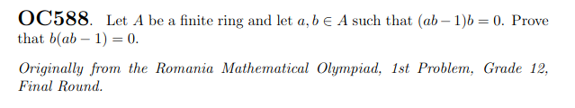

Consider the following problem.

Its solution is published in Crux Volume 49, Issue 1.
Here is Lean formalization of it.
import Mathlib.Algebra.Ring.Defs
import Mathlib.Data.Finite.Defs
import Mathlib.Data.Set.Finite
import Mathlib.Data.Nat.Lattice
theorem crux_oc588 {R: Type*} [Ring R] [Finite R]
(a b : R) (h : (a * b - 1) * b = 0) : b * (a * b - 1) = 0 := by
let s := { b ^ k | k : ℕ }
have h₁: s.Finite := by
exact Set.toFinite s
let t := { k | ∃ n, k < n ∧ b ^ k = b ^ n }
have h₂: t.Nonempty := by
by_contra h₂
simp only [t, Set.Nonempty, Set.mem_setOf_eq, not_exists, not_and] at h₂
have h₃: s.Infinite := by
have ha: Function.Injective (fun x ↦ b ^ x) := by
exact injective_of_lt_imp_ne h₂
have hb: ∀ k : ℕ, b ^ k ∈ s := by
refine fun k ↦ Set.mem_setOf.mpr ?_
use k
exact Set.infinite_of_injective_forall_mem ha hb
exact h₃ h₁
have h₃: a * (b * b) = b := by
rw [sub_mul, one_mul, sub_eq_zero, mul_assoc] at h
exact h
by_cases hm₁: (sInf t = 0)
· obtain ⟨n, hn⟩ := Nat.sInf_mem h₂
rw [hm₁, pow_zero] at hn
have: b * a * b = b := by
rw [← mul_one b, hn.right, ← mul_assoc,
(Nat.sub_eq_iff_eq_add' hn.left).mp rfl,
pow_add b 1 (n - 1), pow_one, ← mul_assoc]
nth_rewrite 2 [mul_assoc, mul_assoc]
rw [h₃, mul_assoc]
nth_rewrite 2 [← pow_one b]
rw [← pow_add b 1 (n - 1),
← (Nat.sub_eq_iff_eq_add' hn.left).mp rfl,
← hn.right, mul_one]
rw [mul_sub, ← mul_assoc, this, mul_one, sub_self]
· by_cases hm₂: (sInf t = 1)
· obtain ⟨n, hn⟩ := Nat.sInf_mem h₂
rw [hm₂, pow_one] at hn
have: b * a * b = b := by
nth_rewrite 2 [hn.right]
rw [(Nat.sub_eq_iff_eq_add' hn.left).mp rfl,
pow_add b 2 (n - 2), ← mul_assoc, pow_add b 1 1, pow_one]
nth_rewrite 2 [mul_assoc]
rw [h₃, ← pow_one b, ← pow_add b 1 1, pow_one b,
← pow_add b 2 (n - 2), Nat.add_sub_of_le hn.left, ← hn.right]
rw [mul_sub, ← mul_assoc, this, mul_one, sub_self]
· obtain ⟨n, hn⟩ := Nat.sInf_mem h₂
have hm₃: 2 ≤ sInf t := by
exact (Nat.two_le_iff (sInf t)).mpr { left := hm₁, right := hm₂ }
have: b ^ (sInf t - 1) = b ^ (n - 1) := by
rw [(Nat.sub_eq_iff_eq_add' (Nat.le_sub_one_of_lt hm₃)).mp rfl,
pow_add b 1 (sInf t - 1 - 1), pow_one]
nth_rewrite 1 [← h₃]
rw [← pow_one b, ← pow_add b 1 1, pow_one b, mul_assoc,
← pow_add b 2 (sInf t - 1 - 1),
← (Nat.sub_eq_iff_eq_add' hm₃).mp, hn.right]
have: 2 < n := by
exact (LE.le.trans_lt hm₃ hn.left)
nth_rewrite 1
[(Nat.sub_eq_iff_eq_add' (Nat.lt_succ.mp (Nat.le.step this))).mp rfl]
· rw [pow_add b 2 (n - 2), pow_add b 1 1, pow_one, ← mul_assoc, h₃]
nth_rewrite 1 [← pow_one b]
rw [← pow_add b 1 (n - 2),
← (@Nat.sub_eq_iff_eq_add' 1 (n - 1) (n - 2) ?_).mp rfl]
exact Nat.le_sub_one_of_lt (Nat.lt_trans Nat.le.refl this)
· rfl
have: (sInf t - 1) ∈ t := by
refine Set.mem_setOf.mpr ?_
use n - 1
constructor
· exact (tsub_lt_tsub_iff_right (Nat.one_le_of_lt hm₃)).mpr hn.left
· exact this
have: sInf t ≤ (sInf t - 1) := by exact Nat.sInf_le this
exact absurd (Nat.sub_one_lt_of_le (Nat.zero_lt_of_lt hm₃) Nat.le.refl)
(not_lt_of_le this)